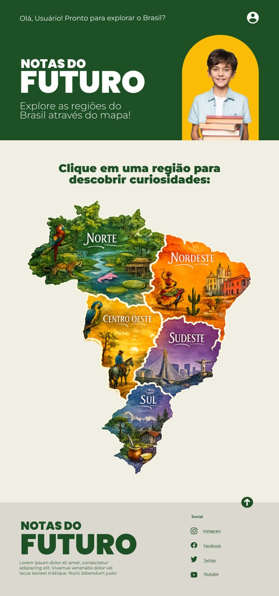

NOTAS DO FUTURO
Bem-vindo(a) de volta!
🌐 Continuar com Google
Ou insira seu Login
E-mail
Senha
👁️
⚠️ Mínimo 8 caracteres
Entrar
Não tem uma conta?
Junte-se a nós
NOTAS DO FUTURO
Explore o Brasil conosco
Nome Completo
E-mail
Senha
👁️
⚠️ Mínimo 8 caracteres
Cadastrar
Já tem uma conta?
Entrar

⬅ Mapa
Região
REGIÃO
Pergunta
1
de 3
Carregando pergunta...
Próxima Pergunta
Minijogos da Região
⬅ Voltar para o Jogo
Painel do Usuário
👦🏽
Trocar Foto de Perfil:
👦🏽
👧🏻
🦊
🚀
👑
Nome do Aluno:
Estudante UMC
E-mail Registrado:
aluno.es@umc.edu.br
Nota até o Momento (Pontuação):
0 XP 🚀
Sair do Painel